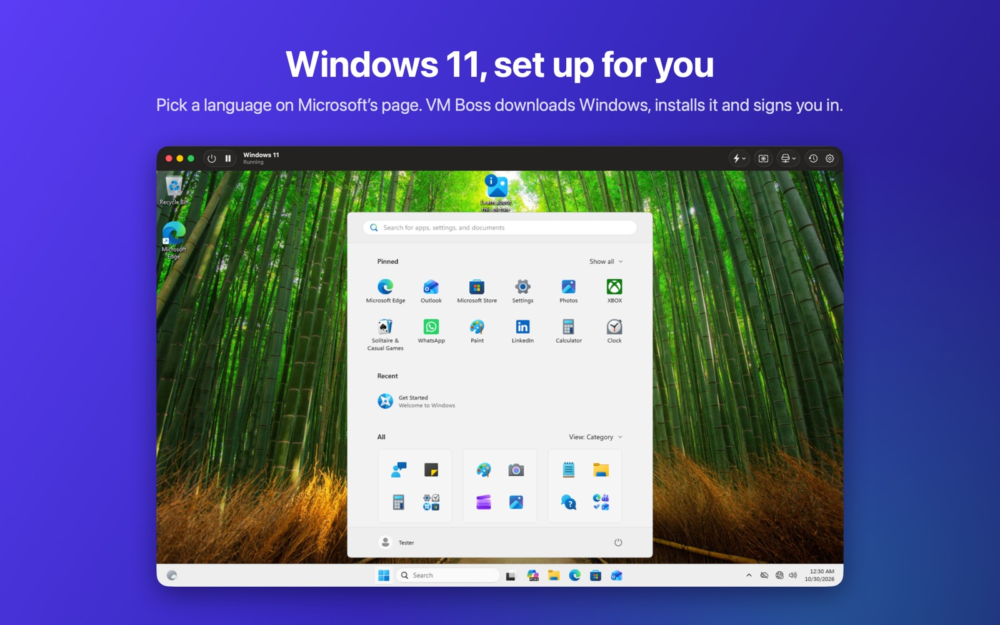
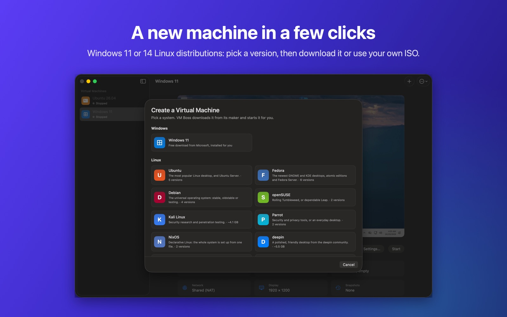

Windows, Linux and Android, side by side with your Mac
Pick a system and VM Boss downloads it from its maker and gets it running. There’s nothing else to install.
For Macs with Apple silicon and macOS 14 or later. Linux is free; Pro adds Windows, Android and more.

Set up for you
Each system runs on the engine that suits it, at native speed on Apple silicon.
Windows 11
Microsoft’s download page opens inside VM Boss. Pick a language, and VM Boss downloads Windows, installs it and signs you in. The display follows your window.
14 Linux distributions
Ubuntu, Fedora, Debian, openSUSE, Kali, Parrot, NixOS, deepin, AlmaLinux, Rocky, CentOS Stream, Void, Gentoo and Alpine: 34 versions, straight from each project, or your own ISO.
Android and iPhone
The newest Android with Google Play on Google’s emulator, downloaded for you, and iPhone and iPad devices from Xcode’s Simulator, for testing your apps.
Everyday tools
Suspend and resume, snapshots, instant clones, a menu bar extra, and vmctl for the command line.

A new machine in a few clicks
Pick a system, then a version. VM Boss downloads it with a progress bar, sizes the machine and starts it. Windows installs itself; Linux opens its installer.
Free for Linux. Pro for everything else.
Try every Pro feature free for 14 days in the app: VM Boss › VM Boss Pro…
Free
- Linux virtual machines
- All 14 distributions, and your own ISOs
- Suspend, resume and the menu bar extra
VM Boss Pro
- Everything in Free
- Windows 11 virtual machines
- Android and iPhone devices
- Snapshots and instant clones
- The vmctl command-line tool
Prices are in US dollars; sales tax or VAT is added at checkout where it applies. Orders are processed by Paddle, our reseller. Windows isn’t included: it downloads free from Microsoft, and you activate it with your own license. Not happy? Get a full refund within 14 days (refund policy).
Questions
What do I need?
A Mac with Apple silicon and macOS 14 Sonoma or later. VM Boss includes QEMU for Windows and downloads everything else it needs. iPhone and iPad devices need Apple’s Xcode, free on the Mac App Store.
What happens when the trial ends?
Linux keeps working. Buy Pro to keep using Windows, Android, iPhone, snapshots and vmctl.
How do I get my license key?
Right after you pay, the license page shows your key and a button that activates it in VM Boss. Bookmark that page to see your key again, or email us your receipt.
Can I get a refund?
Yes: a full refund within 14 days of buying, for any reason. See the refund policy.
Does VM Boss collect my data?
No. See the privacy policy.
Support
Email support@vm-boss.com, or open an issue on GitHub for bugs and ideas.